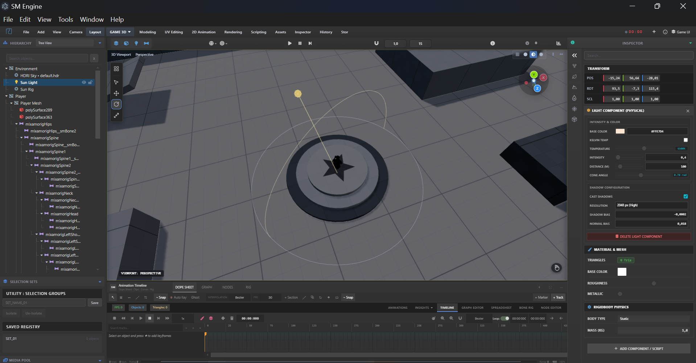
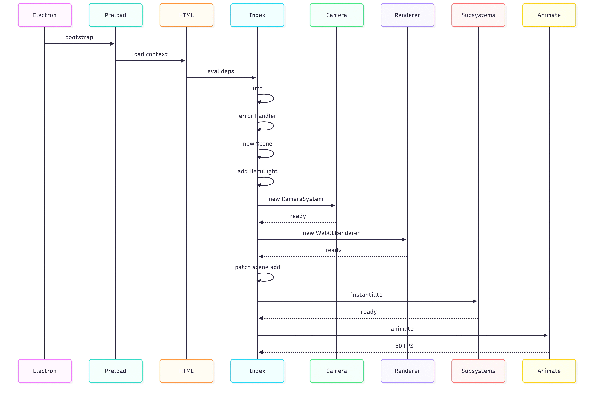
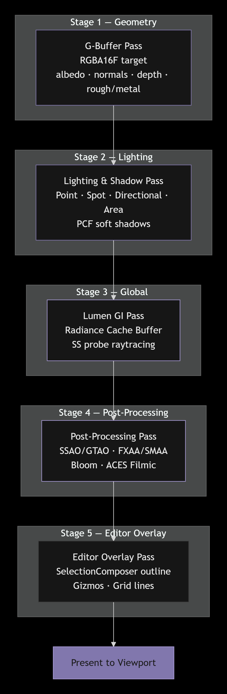
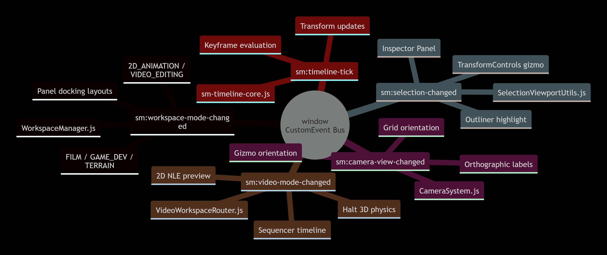
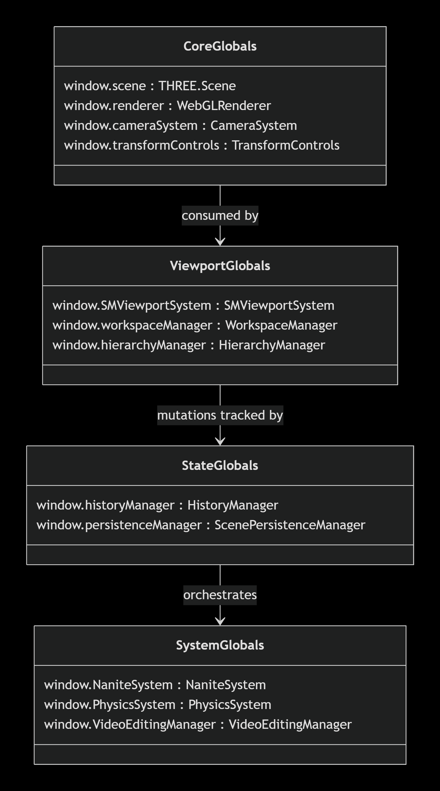

SM Engine System Architecture Blueprint
An in-depth technical analysis of SM Engine’s core software architecture, lifecycle execution model, multi-pass WebGL2 rendering pipeline, reactive event bus, and unified state managers.
1. Application Bootstrap & Execution Lifecycle

The engine entry point is managed by electron-main.js and preload.js, loading the renderer context inside index.html. Over 120 modular dependency files are evaluated sequentially before executing the core orchestrator script index.js.
Initialization Sequence Pipeline (`index.js`)
Execution begins via the idempotent asynchronous bootstrap function async function init():
-
Global Exception Guard: Instantiates
window.__smInitErrorHandlerto log runtime initialization exceptions, stack traces, and WebGL context losses. -
Scene Graph Initialization: Instantiates primary
THREE.Scene(background0x393939, exponential fog0x44484D) exposed globally aswindow.scene. -
Bootstrap Light Management: Injects system
THREE.HemisphereLight(name:SMEditorBootstrapHemi) flagged with system properties (userData.isSystemObject = true,userData.ignoreInTimeline = true,userData.ignoreInHierarchy = true). -
Camera System Construction: Instantiates
window.cameraSystem = new CameraSystem(scene, mainRendererContainer, ...), building dual perspective (FOV 45°, near 0.02, far 3000) and orthographic projection cameras managed viaOrbitControls. -
WebGL2 High-Performance Renderer: Configures
window.renderer = new THREE.WebGLRenderer(...)with parameters:powerPreference: 'high-performance'logarithmicDepthBuffer: trueoutputColorSpace: THREE.SRGBColorSpacetoneMapping: THREE.ACESFilmicToneMapping(exposure 0.85)shadowMap.type: THREE.PCFShadowMap
-
Scene Graph Monkey-Patching: Intercepts
scene.add()andscene.remove()methods to inject automatic timeline tracking, Nanite LOD filtering, and hierarchy outliner registration. -
Subsystem Instantiation: Constructs core managers in strict dependency order:
HierarchyManager➔SMViewportSystem➔TransformControls➔NaniteSystem➔PerformanceManager➔WaterSystem➔LumenLightingSystem➔SkyLightingSystem➔HistoryManager➔ScenePersistenceManager. -
Render Loop Execution: Kicks off the continuous 60 FPS animation loop via
animate().

init() creates the scene, installs the error handler, builds the
CameraSystem and WebGLRenderer, patches the scene graph,
then instantiates every subsystem in strict dependency order. Click to enlarge.
2. Dynamic Scene Graph Interception Pattern
To decouple editor panels from core logic, SM Engine patches the native THREE.Scene.prototype.add and remove calls directly inside index.js:
// Dynamic Scene Interception Pattern in index.js
const SM_originalSceneAdd = scene.add;
const SM_originalSceneRemove = scene.remove;
scene.add = function (object) {
const result = SM_originalSceneAdd.apply(scene, arguments);
if (!object || !object.isObject3D) return result;
// 1. Auto-deduplicate System Lights
if (object.isHemisphereLight) {
queueMicrotask(() => window.dedupeHemisphereLights?.());
}
// 2. Register Object with Animation Timeline
if (!object.userData?.ignoreInTimeline && typeof addObjectToTimeline === 'function') {
addObjectToTimeline(object);
}
// 3. Nanite LOD Eligibility Check
const isExcludedFromNanite = object.userData.isNaniteOriginal ||
object.userData.isTerrain || object.userData.isDynamicMesh ||
object.userData.isSystemObject;
if (!isExcludedFromNanite && window.NaniteSystem) {
window.NaniteSystem.registerMesh(object);
}
// 4. Hierarchy Outliner Synchronization
if (window.hierarchyManager && !object.userData?.ignoreInHierarchy) {
window.hierarchyManager.onObjectAdded(object);
}
return result;
};3. Multi-Pass Render Pipeline (`SMRenderPipeline.js`)
Rendering in SM Engine is handled by SMRenderPipeline.js, utilizing a deferred-style multi-pass pipeline for physically-based lighting and post-processing:
| Pass Name | Buffer / Target | Description |
|---|---|---|
| G-Buffer Pass | WebGLRenderTarget (RGBA16F) |
Renders geometry albedo, world-space normals, depth, and roughness/metallic channels. |
| Lighting & Shadow Pass | Main Framebuffer | Computes direct lighting from Point, Spot, Directional, and Area lights with PCF soft shadows. |
| Lumen GI Pass | Radiance Cache Buffer | Real-time global illumination radiosity approximation via screen-space probe raytracing. |
| Post-Processing Pass | Screen Quad | Applies SSAO/GTAO ambient occlusion, FXAA/SMAA anti-aliasing, Bloom, and ACESFilmic tone mapping. |
| Editor Overlay Pass | Viewport Target | Renders selection outline glowing borders (`SelectionComposer`), transform gizmos, and grid lines. |

G-Buffer writes albedo/normals/depth/roughness,
Lighting computes direct shadows, Lumen GI adds real-time
global illumination, Post-Processing applies SSAO/FXAA/Bloom/ACES, and
the Editor Overlay draws selection outlines and gizmos. Click to enlarge.
4. Reactive Event-Bus & Inter-Module Communication
Modules communicate asynchronously using native CustomEvent dispatchers on the global window object:
| Event Identifier | Trigger Source | Subscriber Actions |
|---|---|---|
sm:workspace-mode-changed |
WorkspaceManager.js |
Reconfigures panel docking layouts (FILM, GAME_DEV, TERRAIN, 2D_ANIMATION, VIDEO_EDITING). |
sm:camera-view-changed |
CameraSystem.js |
Updates gizmo orientation, top/side/front orthographic labels, and grid orientation. |
sm:selection-changed |
SelectionViewportUtils.js |
Populates Inspector Panel properties, attaches TransformControls gizmo, highlights outliner tree. |
sm:video-mode-changed |
VideoWorkspaceRouter.js |
Toggles 2D NLE preview canvas, halts 3D physics tick, activates sequencer timeline. |
sm:timeline-tick |
sm-timeline-core.js |
Evaluates object keyframe interpolations and updates scene object transform properties. |

window
CustomEvent bus. Five core events coordinate workspace layouts, camera
views, selection, video mode, and timeline ticks. Click to enlarge.
5. Multi-Domain History Stack (`HistoryManager.js`)
SM Engine features a centralized, command-pattern undo/redo system capable of managing mutations across 6 distinct editing domains:
- 3D Viewport Domain: Transform movements, rotations, scaling, object instantiation, deletion, and reparenting.
- Mesh Edit Mode Domain: Vertex/edge/face extrusions, loop cuts, bevels, knife cuts, and vertex welds.
- Sculpt Mode Domain: Sculpt stroke heightfield deltas (compressed displacement undo buffers).
- Shader Node Domain: Node creation, disconnection, socket wiring, and property parameter slider changes.
- Timeline Domain: Keyframe insertion, track movement, curve handle adjustments.
- Video NLE Domain: Video clip trimming, track additions, effect stack updates.
6. Global Singletons & State Registry
| Global Symbol | Originating Source File | Type / Class | System Responsibility |
|---|---|---|---|
window.scene | index.js | THREE.Scene | Primary 3D Scene Graph root container. |
window.renderer | index.js | THREE.WebGLRenderer | Hardware WebGL2 graphics rendering engine. |
window.cameraSystem | engine/camera-system.js | CameraSystem | Manages perspective and orthographic camera projections. |
window.transformControls | index.js | THREE.TransformControls | Interactive move/rotate/scale viewport gizmo. |
window.SMViewportSystem | engine/SMViewportSystem.js | SMViewportSystem | Multi-panel viewports and split-screen manager. |
window.workspaceManager | js/app/WorkspaceManager.js | WorkspaceManager | Orchestrates editor workspace modes and panel presets. |
window.hierarchyManager | panels/HierarchyPanel.js | HierarchyManager | Manages Outliner tree view and parent/child hierarchies. |
window.historyManager | history/history.js | HistoryManager | Centralized multi-domain undo/redo stack (max 60 steps). |
window.persistenceManager | processing/persistence/... | ScenePersistenceManager | Handles JSON serialization, auto-save timers, IndexedDB cache. |
window.NaniteSystem | engine/logic/nanite/... | NaniteSystem | Virtualized geometry cluster streaming & auto-LOD solver. |
window.PhysicsSystem | physics/PhysicsSystem.js | PhysicsSystem | Ammo.js Bullet C++/WASM rigid & soft body physics. |
window.VideoEditingManager | video-editing/core/... | VideoEditingManager | Non-linear video sequence editor engine. |

window, grouped by concern:
CoreGlobals (scene graph & rendering), ViewportGlobals
(editor UI), StateGlobals (history & persistence), and
SystemGlobals (Nanite, Physics, Video). Click to enlarge.